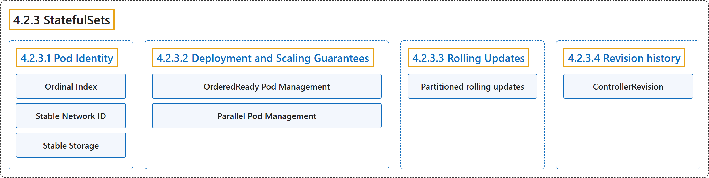

4.2.3 StatefulSets
Classification

Glossary
| Term | Definition | 中文翻译 | Source |
|---|---|---|---|
| 4.2.3 StatefulSets StatefulSet |
"A StatefulSet runs a group of Pods, and maintains a sticky identity for each of those Pods." | StatefulSet 运行一组 Pod，并为每个 Pod 维持一个粘性身份。 | The Kubernetes Authors, n.d., "StatefulSets", para. 1 |
| 4.2.3.1 Pod Identity Pod 身份 |
"StatefulSet Pods have a unique identity that consists of an ordinal, a stable network identity, and stable storage." | StatefulSet 的 Pod 拥有唯一身份，由序号、稳定的网络标识和稳定的存储组成。 | The Kubernetes Authors, n.d., "Pod Identity", para. 1 |
| Ordinal Index 序号索引 |
"For a StatefulSet with N replicas, each Pod in the StatefulSet will be assigned an integer ordinal, that is unique over the Set." | 对于有 N 个副本的 StatefulSet，其中每个 Pod 都会被分配一个整数序号，该序号在该集合内唯一。 | The Kubernetes Authors, n.d., "Ordinal Index", para. 1 |
| Stable Network ID 稳定的网络标识 |
"Each Pod in a StatefulSet derives its hostname from the name of the StatefulSet and the ordinal of the Pod." | StatefulSet 中的每个 Pod 得出自己的主机名，依据是 StatefulSet 的名称和该 Pod 的序号。 | The Kubernetes Authors, n.d., "Stable Network ID", para. 1 |
| Stable Storage 稳定的存储 |
"For each VolumeClaimTemplate entry defined in a StatefulSet, each Pod receives one PersistentVolumeClaim." | 对于 StatefulSet 中定义的每个 VolumeClaimTemplate 条目，每个 Pod 都会获得一个 PersistentVolumeClaim。 | The Kubernetes Authors, n.d., "Stable Storage", para. 1 |
| 4.2.3.2 Deployment and Scaling Guarantees 部署和扩缩保证 |
(No definition) | （无定义） | The Kubernetes Authors, n.d., "Deployment and Scaling Guarantees" |
| OrderedReady Pod Management OrderedReady Pod 管理 |
"OrderedReady pod management is the default for StatefulSets." |
OrderedReady Pod 管理是 StatefulSet 的默认方式。 |
The Kubernetes Authors, n.d., "OrderedReady Pod Management", para. 1 |
| Parallel Pod Management Parallel Pod 管理 |
"Parallel pod management tells the StatefulSet controller to launch or terminate all Pods in parallel" |
Parallel Pod 管理让 StatefulSet 控制器去并行启动或终止所有 Pod |
The Kubernetes Authors, n.d., "Parallel Pod Management", para. 1 |
| 4.2.3.3 Rolling Updates 滚动更新 |
"When a StatefulSet's .spec.updateStrategy.type is set to RollingUpdate, the StatefulSet controller will delete and recreate each Pod in the StatefulSet." |
当 StatefulSet 的 .spec.updateStrategy.type 设为 RollingUpdate 时，StatefulSet 控制器会删除并重建 StatefulSet 中的每个 Pod。 |
The Kubernetes Authors, n.d., "Rolling Updates", para. 1 |
| Partitioned rolling updates 分区滚动更新 |
"The RollingUpdate update strategy can be partitioned, by specifying a .spec.updateStrategy.rollingUpdate.partition." |
RollingUpdate 更新策略可以分区，方法是指定 .spec.updateStrategy.rollingUpdate.partition。 |
The Kubernetes Authors, n.d., "Partitioned rolling updates", para. 1 |
| 4.2.3.4 Revision history 修订历史 |
(No definition) | （无定义） | The Kubernetes Authors, n.d., "Revision history" |
| ControllerRevision ControllerRevision |
"ControllerRevision is a Kubernetes API resource used by controllers, such as the StatefulSet controller, to track historical configuration changes." | ControllerRevision 是一种 Kubernetes API 资源，供 StatefulSet 控制器等控制器跟踪历史配置变更。 | The Kubernetes Authors, n.d., "Revision history", para. 1 |
References
The Kubernetes Authors. (n.d.). StatefulSets. Kubernetes Documentation. Retrieved October 31, 2026, from https://kubernetes.io/docs/concepts/workloads/controllers/statefulset/